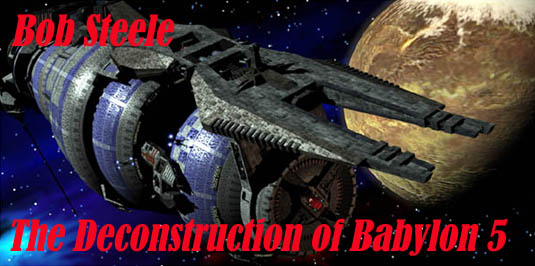

All Alone in the Night
I begin with the following quote by Carl Sagan, from the book of his 1980 TV series Cosmos :
"Some 3.6 million years ago, in what is now northern Tanzania a volcano erupted, the resulting cloud of ash covering the surrounding savannah. In 1979, the paleoanthropologist Mary Leakey found in that ash footprints -the footprints, she believes, of an early hominid, perhaps an ancestor of all the people on Earth today. And 380,000 kilometers away, in a flat dry plain that humans have in a moment of optimism called the Sea of Tranquility, there is another footprint, left by the first human to walk on another world. We have come far in 3.6 million years, and in 4.6 billion and in 15 billion.
For we are the local embodiment of a cosmos grown to self awareness. We have begun to contemplate our origins: starstuff pondering the stars; organized assemblages of ten billion billion billion atoms considering the evolution of atoms; tracing the long journey by which, here at least, consciousness arose. Our loyalties are to the species and the planet. We speak for Earth. Our obligation to survive is owed not just to ourselves, but also to that cosmos, ancient and vast, from which we spring."
The above quotation, in my view embodies the essence of what, at its core, the story of Babylon 5 was really saying. In Cosmos, the late great American astronomer and cosmologist communicated one of the fundamental truths of our existence. Life is the embodiment of a conscious Universe. More than that, Sagan contended that we have a duty to survive and to learn. In short, life is the Universe's way of understanding itself, and the longer life can survive, evolve and learn, the greater its capacity for understanding can be.
Joseph Michael Straczynski (from here referred to as JMS) who later became the creator, executive producer and principle author of Babylon 5, must have been just as impressed by Sagan's view of the Cosmos as I was. It was almost certainly one of the major influences that gave him a philosophical skeleton on which to hang his story, and did in fact become the foundation for some of B5's most important themes. There were, of course, many other themes underlying the B5 storyline (or story arc as JMS preferred to call it), and taken together these defined what this complex and fascinating epic of imaginative fiction was all about. What these themes actually were, in my view, will be discussed later. Before going into further detail on this aspect, however, it is worth considering the way in which the story was told. In many ways an innovation in itself.
The Long Twilight Struggle
Inspired by the British SF series Blake's Seven, which, for the most part told a continuing story rather than consisting of individual episodic plots, JMS set out to make a series that could tell a much more complex story within the restrictions of American TV. Babylon 5 was designed and constructed as a novel, with the story having a distinct beginning, middle and end. The only difference between B5 and any other novel being that B5 was to be told in the medium of television rather than in the medium of the written word. The story had the standard structure of a novel, with an introduction, followed by a "rising action" phase, followed by a "complication" phase, followed by a "denouement" phase. JMS had written a detailed plan of the story before the pilot episode of the series went into production, the so called "Bible" of Babylon 5. As a result of the vagaries of TV in comparison to literature, various aspects of the story had to be changed during the course of the series' five year run, but, In the end, the story arrived where JMS originally intended to go, and said what he originally wanted it to say.
The story of B5 not only followed the conventions of written SF, it was also heavily influenced by literature in general and SF literature in particular. Major influences on the story that can be easily spotted include Tolkien's Lord of the Rings, Tolstoy's War and Peace, Walter M. Miller, Jr's A Canticle for Leibowitz, Frank Herbert's Dune, H. P. Lovecraft's 'Cthulhu Mythos' and Alfred Bester's novels dealing with telepathy The Demolished Man and The Stars My Destination (akaTiger, Tiger). JMS took aspects of all of these works, as well as other influences from mythology (such as Arthurian legend) and many more minor influences, and built an original story around them utilising the themes he wanted to deal with. The result was an epic story which at the same time fascinated, entertained, amused and intrigued the viewer. Sometimes it inspired intense emotion, sometimes it inspired re-examination of ones own ideals and beliefs, it inspired a sense of wonder seldom experienced outside the realm of the written SF novel, but above all it made the viewer think. And like all good SF, it reflected the time in which it was written and touched on many aspects of our recent history and current events.
David Pringle, the editor of the UK's premier SF magazine Interzone, some time ago in the magazine's letter column, said that SF on TV "aspires to the condition of the soap opera". An opinion with which, at the time, I found it difficult to disagree. I would add the corollary, however, that it tends to apply to American SF TV shows more than any others. Babylon 5, at the time, was the exception that proved the rule, but has since influenced SF programme making in such a way as to positively change the rules. Rather than aspiring to the condition of the soap opera, B5 aspired to the condition of the epic novel. Star Trek and its various spin offs set a trend for episodic character based series, which for the most part concentrated on the way in which the various characters react to situations and solve problems. These problems sometimes impinge on the characters personal lives and effect their emotional state, but usually nothing significant changes from episode to episode. The events depicted in one episode seldom have any bearing on the events of future episodes. The proverbial "big red reset button" is pushed and the situation of the characters at the end of the episode is little different from that when the episode began.
The success of Babylon 5 changed all that. It showed that a series doesn't need to consist of interchangeable "stand alone" episodes in order to be popular. It can tell a continuing story over the course of more than just a few episodes. The events in a particular episode can have repercussions that don't become apparent for many episodes, or even over the course of a few series. The story can be about the way the lives and actions of the characters shape events, as much as about the way that events effect the characters. A continuing story can be told over the course of a number of series rather than just a couple of episodes, and the various characters involved can change and grow with the story. In the future, Babylon 5 is likely to be remembered as much for the effect it had on SF TV programme making (including the various Star Trek incarnations) as much as for the story it told.
Confessions and Lamentations
All that being said, Babylon 5 was not perfect. It did have its faults and weaknesses. Although the overall story was superbly constructed and told, the actual writing was sometimes weak and the dialogue sometimes poor. Who can forget Captain Sheridan's infamous "Get the Hell out of our Galaxy" statement? Also the characterisation, particularly that of some of the recurring characters outside the main cast, wasn't particularly good (although some characters have since been filled out in the B5 spin off novels and comics). The "state of the art" CGI special effects, although for the most part superb, on occasion were not quite as good as they should have been.
As far as the acting goes, the performances of the main cast varied between good and wonderful, with notable overall performances coming from Andreas Katsulas as G'Kar, Peter Jurassic as Londo Molari and Mira Furlan as the leading female character Delenn. Other performances of note include the perfectly cast Ed Wasser as the truly menacing Mr Morden, Tim Choate's at the same time eccentric, funny and intriguing performance as Zathras and Walter Koenig as the cold and power hungry Psi Cop, Bester.
The level of performance among some of the more minor and one off character's, however, was a different story. A combination of poor casting and poor acting led to performances that were sometimes wooden, sometimes over the top and occasionally downright embarrassing. A number of Australian-sounding 'Cockney' accents spring immediately to mind.
B5 had its share of below par episodes. Admittedly most of these occurred during the early parts of season 1 and season 5 (both of which improved immensely as they went on), but there were the occasional bad episodes even during B5's best periods. One in particular, the now infamous 'Grey 17 is Missing', at least in terms of theme should have been one of the high points of the whole story. Instead, as most B5 fans would agree, it turned out to be one of the worst episodes of the series. The episode attempted to make explicit some of the series major underlying themes, but suffered from a combination of poor writing, over the top performances and a man in a rubber monster suit. The average B5 episode, on the other hand, was usually a good and enjoyable piece of TV SF, but it is difficult to consider any episode of this series individually without considering its contribution to the overall story. B5 was a work of emergent fiction. The whole was greater than the sum of its parts.
A Race Through Dark Places
So, in the final analysis what was Babylon 5 all about? Well, there is no easy "soundbite" that can answer this question, and nor should there be for a story of this complexity. B5's themes were in many cases presented in a multi-layered fashion, so that the events in specific threads and even in specific episodes had relevance to a number of them. Some themes were obvious, and a number of other underlying themes only became clear in retrospect as the events of the overall story unfolded. Below is my summary of the themes that I see as having defined the B5 story, with a bit of explanation for each. So, I ask again : What was Babylon 5 all about?
War Without End
It was about war and peace. It was about how we, as sentient beings tend always to strive for peace, while it is war that defines our history. A point that is made explicit by Mr Garibaldi in the series 5 episode 'A Tragedy of Telepaths':
"Why is it that we always break up our history by the wars, not the years of peace? The hundred years war, the war of 1812, the first three world wars, the Dilgar war, the war of the Shining Star, the Minbari war, the Shadow war. Why the war, not the peace? Because its exciting, and on some level people like to see something big fall apart and explode from the inside out".
The whole concept of the Babylon stations was rooted in the Earth-Minbari war, which happened ten years prior to where we pick up the story in series 1, but was covered more fully in the TV movie 'In the beginning'. Humanity had fought a war that brought them to the brink of extinction and couldn't really understand how they had escaped that fate. So they decided to build a station where they could learn to live peacefully with various alien species, in the hope of preventing another war. During the series the station failed in its original mission more than once (A major part of the series covered the significant events of the Shadow war, of which the Narn/Centauri war and the Civil war between Babylon 5 and Earth were a part, and in the end we see the beginnings of new wars - the Telepath war and the Drakh war). The stories main protagonists, however, never stopped trying, never stopped striving for peace, even when it meant fighting for it.
Ceremonies of Light and Dark
It was about regret, atonement and forgiveness. These themes were apparent again and again throughout the series and were made explicit in the mirror image episodes of series 3 'Passing through Gethsemane' and 'A late delivery from Avalon'. In the first a monk is tormented by what he believes to be visions of a past life. It turns out that he is a serial killer who had been "mind wiped" and given a new life in which he could atone for his previous actions. His visions, however, turn out to be very real threats from the relatives of those he killed. In the end he himself is murdered by one of the relatives, unforgiven for his actions despite his atonement.
In 'A late delivery from Avalon' the gunner who fired the shot which began the Earth Minbari war has retreated from reality due to his deep regret. His wish to atone for his actions manifests itself in his belief that he is King Arthur returned from Avalon on a mission to return Excaliber to the Lady of the Lake. The "Lady of the Lake" turns out to be Delenn, who finally accepts his sword and forgives him. In a later episode Delenn herself must atone for her role in the beginning of the war. These themes are also apparent in many aspects of the Shadow war and the civil war with Earth, and later in the story of the telepath colony on B5.
Nowhere are they more apparent, however, than in the story of Centauri Ambassador Londo Molari. His actions during his Faustian pact with the Shadows in series 1 and 2 lead to unimaginable destruction, countless deaths and the enslavement of a planet. Almost from the beginning, Londo regrets his actions and knows that they will lead him to ruin. Later, during series 4 and 5, his actions are almost exclusively aimed at atoning for his previous crimes. He seeks forgiveness from his old enemy and new friend G'Kar, who's world he helped destroy, enslave and finally set free. In the end G'kar does forgive Londo just before his inevitable tragic fate overtakes him.
Falling Towards Apotheosis
It was about how circumstances can lead ordinary people to greatness, and can lead otherwise good people to commit the most terrible of crimes. The first part of this theme is epitomised by the stories of Babylon 5's two commanders John Sheridan and Jeffrey Sinclair. Both are ordinary soldiers, but are elevated to the status of great leaders (and in the eyes of some, even to near godhood) by the actions they must take in reaction to the circumstances with which they are presented. To some extent this also applies to G'Kar, who began as an ambassador, and ended up being seen as a messiah like figure by his people.
The second part is once again epitomised by Londo Molari. At one point near the end of the story Londo states that "Everything I did, I did for the good of my people". Many things he does during the series shows that he is basically a good person who tries to do his best for people, but some bad decisions, some manipulation from the Shadows and the force of circumstances lead him to commit the most terrible crimes.
Other characters to which this part of the theme applies include Mr Morden and the Psi Cop Bester, although you won't fully see why unless you've read the relevant novels. In many ways the series was about the struggle against the capacity for evil within all of us. As Delenn said in 'War Without End', "there are always new battles to be fought against the darkness, only the names change".
Voices of Authority
It was about power, its nature, its abuse and how it can be used to exploit and manipulate. This is a theme which was apparent in some of the major threads of the story. It was most apparent in the of the story of the telepaths and their treatment by Psi Corps, which resulted from the alienation of telepaths on Earth due to fear and distrust from the general population; and in the story of how Earth's government was taken over by the corrupt and dictatorial regime of President Clarke. It was also apparent, however, in the way in which the younger races were manipulated by both the Shadows and the Vorlons, and later in the way that Sheridan manipulated the League of non-aligned worlds in order to lay the foundations for the Interstellar alliance.
The Face of the Enemy
It was about the "nature or nurture" question of development and evolution. This was at the core of the disagreement between the Shadow's and the Vorlons which resulted in the various Shadow wars including the one depicted in the series, and other past conflicts that were alluded to. The Vorlons believed that they could guide the younger races and help them evolve by creating order through social and genetic manipulation. The Shadows took the opposing view that evolution would best be served through war and chaos. Survival of the fittest. These two opposing views can also be seen as a metaphor for the struggle between science and religion.
The Deconstruction of Falling Stars
It was about how great age and experience do not always equate with true wisdom. I.e., both the Shadows and the Vorlons were wrong. The younger races no longer needed or wanted their guidance and were well capable of deciding the course of their destiny for themselves. At the end of the Shadow war, both of the older races were rejected, and realised that somewhere along the line they had lost their way. The Vorlons and Shadows would leave and the younger races would fend for themselves. As JMS half jokingly put it "it's about kicking out your parents".
Meditations on the Abyss
It was about the nature of belief and the need for faith. During the course of B5's five year run we encountered many religions, belief systems and types of faith. This not only included religious faiths, but faith in ones self, faith in life and faith in the future. A major point being that the importance of faith outweighs the actual beliefs involved. The series also in many ways examined the nature of belief, and why we believe what we do. In doing so it made the point that belief is simply an attempt to understand the nature of things, why things are the way they are. The universe attempting to understand itself. The important thing is not so much what is believed as the act of belief itself. In this respect religion and science are the same. One is based on belief, the other is based on experiment, reason and logic, but both are ways of attempting to understand how the Universe works.
No Surrender, No Retreat
Above all, perhaps, as indicated in the Sagan quote with which I began, Babylon 5 was about life. It was about the nature life as the embodiment of a conscious universe. This was stated as the basic premise of Minbari religion, and is the theme which the failed episode 'Grey 17 is Missing' attempted to make explicit. During the series humanity, then sentient life itself, faced battles with what seemed like unbeatable enemies. First humanity had to fight the more advanced Minbari in the Minbari war. Then, twelve years later, most of the races on B5, including both human and Minbari, had to fight the highly advanced, extremely old and seemingly unstoppable Shadows. Although in both cases defeat seemed almost certain, the fight continued and was won for the cause of life.
The chances of life arising in the first place and then developing intelligence are very low to say the least, but as implied in Sagan's Cosmos, it is our duty to survive. The paramount importance of life and of saving life was apparent throughout the B5 story. Two examples include the following quotations. "The third principle of sentient life" was stated by Delenn's mentor Draal in the series 1 episode 'A Voice in the Wilderness' as "The capacity for self sacrifice. The conscious ability to overide self-preservation and evolution for a cause, a friend, a loved one". Delenn's answer to Sebastian in the series 2 episode 'Comes the Inquisitor' when asked about her great cause was "This is the cause. Life! One life or a billion its all the same".
And the Sky Full of Stars
Further to this, Babylon 5 was about the evolution of life and how it could develop in order to better understand the universe. We see at least three stages in this development in the story of B5. Firstly life must have the ability to communicate, first through spoken or written language and then through technology. We understand the universe through our technology and through communication with others.
In the next stage telepathy evolves (with a little help from the Vorlons in the B5 universe), the ultimate consequence of which would be to make the need for written and spoken language redundant, vastly increasing the capacity for learning and understanding.
A further consequence of this is the next stage, development beyond the corporeal, where life no longer has the need of a physical form, where all communication is through thought leading to the development of some form of collective consciousness. Although never explicitly stated it was always implied in B5 that this is how the Vorlon society worked. The other first ones, and perhaps the Shadows were also non-corporeal, and we see that humans have developed to this stage a million years in the future in the episode 'The Deconstruction of Falling Stars'. The theme of development beyond the corporeal is also re-visited in the TV movie 'River of Souls'.
So, at each stage communication becomes more efficient and as a consequence the potential for understanding and the role of life as the consciousness of the Universe is vastly increased.
Finally, Babylon 5 was about how eventually all things always come to an end (including the station itself), but for each ending there is always a new beginning as long as there is life.
Sleeping in Light
That's quite a list. So why do I feel that I haven't covered everything? Perhaps because I haven't mentioned some of the great truths that are littered throughout the series as single quotations. Or maybe there's so much in it that each individual viewer should just get what they can from the story. If you've followed the whole thing from beginning to end as I have, you'll understand. If you haven't seen it, or have only seen odd episodes, I would strongly recommend that you watch all of it.
Finally I would like to thank John Owen for introducing me to Babylon 5 in the first place. I originally approached the series with a great deal of scepticism. A scepticism which I thought at the time was borne out by the first few episodes. Thanks to John, however, I kept watching, and as a result enjoyed what is, to my mind, the greatest SF story ever told in the medium of television.
Bob Steele, April 1999
(Copyright Bob Steele © 1999)
(davephillips@lineone.net) 30/4/99:
John, what a excellent piece of writing. When I was reading through the
text, because I have seen every episode, I could visualise what he was talking
about. I think in general I agree with his insight, but its one of those
passages that needs reading a couple of times to see the underlying notes!
Mic Rogers, 11/6/99:
Bob Steele's article on "Babylon 5" makes me wish all the more
that I'd seen at least some of it! It always seems to've been on at a
time when either the T.V wasn't on or we were watching something else.
(The story of my life!!!)
Got a comment?
Zap it to Rastus